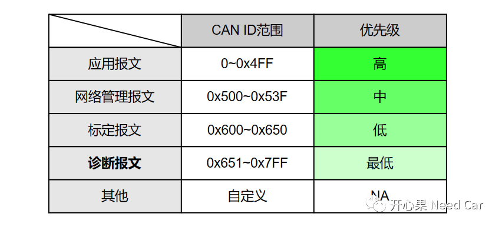
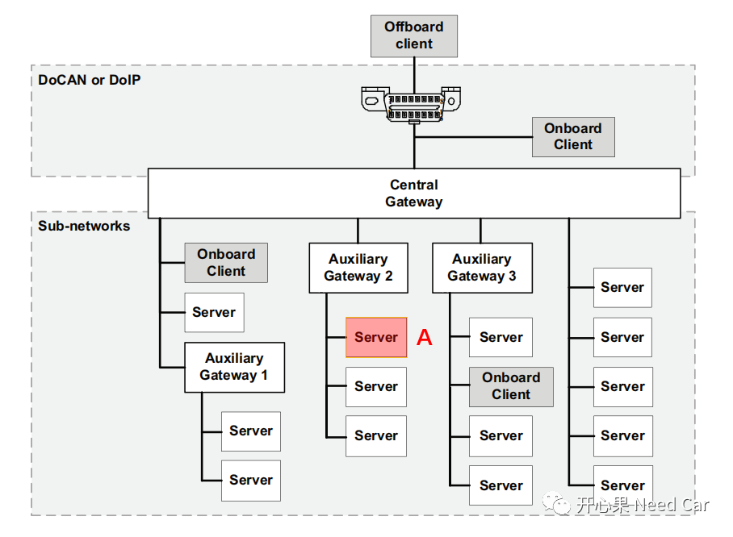

开心果 Need Car · 2023-03-14T08:40:00+08:00 · 微信原文
开发Bootloader的朋友是否曾有这样的疑问：
刷写Application程序的过程中，被刷写节点和非刷写节点，通信行为有何不同？
一个节点为什么既要功能寻址，又要物理寻址？
......
本文，带着这些疑问，展开聊聊。
1、报文类型及网络拓扑
在理解上述问题之前，我们需要先了解一下报文的类型，在整车的网络拓扑中，根据通信场景的不同，一般会将报文分为：应用报文、网络管理报文、标定报文、诊断报文、其他。报文类型及优先级，示意如下：

如上示意可以看出，一般，诊断报文的优先级最低，这也意味着：诊断报文在抢占总线使用权时，"很吃亏"，如果同一时刻，有其他类型的报文也要使用相同网段的CAN总线，诊断报文将会因抢不到总线使用权（优先级低），而被delay。关于CAN总线仲裁原理，可以参考前文CAN总线仲裁原理。所以，这也是UDS（Unified diagnosticservices）中，存在$28（Communication Control service）服务的意义。即：如果需要升级Application程序时，可以通过$28服务将网段内的非诊断报文禁用，只让诊断报文独占总线使用权，进而提高程序刷写效率。
（二）总线拓扑

如上图，当一个销售到终端用户的车辆需要更新Application时，比如：A节点。一般需要通过OBD（On Board Diagnostics）或者OTA（Over-the-Air）方式升级，不管使用何种方式，均需要诊断报文将信息送达需要升级的节点（eg：上图A节点）。如上可以看出，如果一条诊断指令要送达到A节点，同时，A节点将诊断响应给到上位机，需要经过中央网关（Central Gateway）和子网关（Auxiliary Gateway2）。既然，诊断报文需要经过这两个网关节点，就意味着，诊断报文需要在对应的网段参与竞争，获取总线使用权，之后才能到达目标节点。
功能寻址的诊断报文，所有节点均可以接收和处理，所以，所有节点均可进入静默模式。节点进入静默状态以后，诊断报文即可独占总线使用权，从而达到刷写目标节点的目的，但是，此时，不能再使用功能寻址发送诊断报文，因为要升级的节点是特定的，eg：上图中的节点A。如果只给目标节点升级，就需要使用唯一识别的ID进行升级，所以，这就是为什么每个节点还会有一个唯一识别的物理ID原因。使用物理寻址，升级完目标节点以后，再通过功能寻址，告诉其他静默节点，指定的节点升级完成，大家可以通信了，都“躁”起来吧。
思考：单件刷写测试中，CANoe等仿真设备启用self ack可以吗？答：可以。self ack启用等同于有节点接收到报文，整车刷写过程中，完成目标节点刷写，复位以后，各个节点恢复通信的时机存在一定差异，有的节点通信功能恢复的早，即：可早应答报文，有些节点通信恢复的时机稍晚，接收到的报文，可能已被其他早参与通信的节点ack，因此收到的报文，可能已被ack过。
往期精彩回顾
CANoe使用：如何配置CAN、Flexray、Lin唤醒帧
Bootloader开发：为什么需要SBL（Secondary Bootloader）?
Autosar EcuM：APP由RUN到POST_RUN浅析